Rationale
Manipulating Data
In the course of either searching for information within data or in preparing images for publication that help to explain data, it is often necessary to process the raw data in various ways. Examples include slicing into the data to make the interior visible, extracting regions that have particular qualities, and computing statistical measurements from the data. All of these operations involving taking in some original data and using it to compute some derived quantities. This chapter explains how one controls the data processing portion of ParaView's visualization pipeline to go about doing such analyses.
A filter is the basic tool that one uses to manipulate data. If data is a noun, then a filter is the verb that operates on the data. Filters operate by ingesting some data, processing it and producing some other data. In the abstract sense a data reader is a filter too because it ingests data from the file system. ParaView creates filters then when you open data files, and when you instantiate new filters form the Filters menu. The set of filters you create becomes your visualization pipeline, and that pipeline is shown in ParaView's Pipeline Browser.
Filter Parameters
Filter Parameters
Each time a data set is opened from a file, a source is selected, a filter is applied, or an existing reader, source, or filter (hereafter simply referred to as filter) is selected in the Pipeline Browser, ParaView updates the Object Inspector for the corresponding output data set. The Object Inspector has three tabs. In this chapter we are primarily concerned with the Properties tab. The Display tab gives you control over the visual characteristics of the data produced by the filter as displayed in the active view and the Information tab presents meta-information about the data produced by the filter.
Properties
From the Properties' tab you modify the parameters of the filter, fine tuning what it produces from its input (if any). A filter that extracts an isocontour will have a control with which to set the isovalue (or isovalues) to extract at for example. The specific controls and information provided on the tab then are specific to the particular vtkAlgorithm you are working with, but all filters have at least the Apply, Reset, Delete and ? (help) controls.
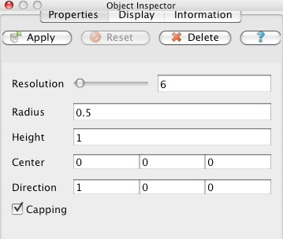
Figure 1. Sample Properties tab for a Cone source
The help button brings opens up the documentation for the filter in ParaView's help system in which the input restrictions to the filter, output type generated by the filter, and descriptions of each parameter are listed. The same information is repeated in the Appendices 1,2 of this book.
The Delete button removes this filter from the pipeline. The delete button is only enabled when there are no filters further down the pipeline that depend on this filter's output. You have to either use the Pipeline Browser and Object inspector in conjunction to delete the dependent parts of the pipeline or use Delete All from the Edit menu.
When a reader, source, or filter is first selected, the associated data set is not immediately created. By default (unless you turn on Auto-Accept in ParaView's settings) the filter will not run until you hit the Apply button. When you do press Apply, ParaView sends the values shown on the Properties tab to the data processing engine and then the pipeline is executed. This delayed commit behavior is important when working with large data, for which any given action might take a long time to finish.
Until you press Apply and any other time that the values shown on the GUI do not agree with what was last sent to the server, the the Apply button will be highlighted (in blue or green depending on your operating system). In this state the Reset button is also enabled. Pressing that returns the GUI to the last committed state, which gives you an easy way to cancel mistakes you've made before they happen.
The specific parameter control widgets vary from filter to filter and sometimes vary depending on the exact input to the filter. Some filters have no parameters at all and others have many. Many readers present the list and type of arrays in the file, an allow you to pick some or all of them as you need. In all cases the widgets shown on the Properties tab give you control over exactly what the filter does. If you are unsure of what they do, remember to hit the ? button to see the documentation for that filter.
Note that ParaView attempts to provide reasonable default settings for the parameter settings and to some extent guards against invalid entries. A numeric entry box will not let you type in non-numerical values for example. Sliders and spin boxes typically have minimum and maximum limits built in. In some cases though you may want to ignore these default limits. Whenever there is a numeric entry beside the widget, you are able to manually type in any number you need to.
Some filter parameters are best manipulated directly in the 3D View window with the mouse. Take the Slice filter for example. Slice extracts slices from the data that lie on a set of parallel planes oriented in space. This type of world space interactive control is what 3D Widgets are for. The textual controls in the Properties Tab and the displayed state of the 3D widgets are always linked so that changing either updates the other. You can of course use the Reset button to revert changes you make from either place.
The Pipeline
Managing the Pipeline
Data manipulation in ParaView is fairly unique because of the underlying pipeline architecture that it inherits from VTK. Each filter takes in some data and produces something new from it. Filters do not directly modify the data that is given to them and instead copy unmodified data through via reference (so as to conserve memory) and augment that with newly generated or changed data. The fact that input data is never altered in place means that unlike many visualization tools, you can apply several filtering operations in different combinations to your data during a single ParaView session. You see the result of each filter as it is applied, which helps to guide you data exploration work, and can easily display any or all intermediate pipeline outputs simultaneously.
The Pipeline Browser depicts ParaView's current visualization pipeline and allows you to easily navigate to the various readers, sources, and filters it contains. Connecting an initial data set loaded from a file or created from a ParaView source to a filter creates a two filter long visualization pipeline. The initial data set read in becomes the input to the filter, and if needed the output of that filter can be used as the input to a subsequent filter, etc.
For example, suppose you create a sphere in ParaView by selecting Sphere from the Sources menu. In this example, the sphere is the initial data set. Next create a Shrink filter from the Alphabetical submenu of the Filters menu. Because the sphere source was the active filter when the shrink filter was created, the shrink filter operates on the sphere source's output. Optionally, use the Properties tab of the Object Inspector to set initial parameters of the shrink filter and then hit Apply. Next create an Elevation filter to filter the output of the shrink filter and hit Apply again. You have just created a simple three element linear pipeline in ParaView. You will now see the following in the Pipeline Browser.
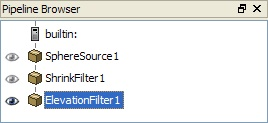
Figure 2. Linear Pipeline
Within the Pipeline Browser, to the left of each entry is an eye icon indicating whether that data set is currently visible. If there is no eye icon, it means that the data produced by that filter is not compatible with the currently active View window. Otherwise, a dark eye icon indicates that the data set is visible; and when a data set is viewable but currently invisible, its icon is drawn in light gray. Clicking on the eye icon toggles the visibility of the corresponding data set. In the above example, all three filters are potentially visible, but only the ElevationFilter is actually being displayed. The ElevationFilter is also highlighted in blue, indicating that it is the currently "active" Filter. Since it is the "active" filter, the Object Inspector reflects its content and the next filter created will use it as the input.
You can always change parameters of any filter in the pipeline after it has been applied. Left-click on the filter in the Pipeline Browser to make it the "active" one. The Properties, Display, and Information tabs are always reflect the "active" filter. When you make changes in the Properties tab and apply your changes, all filters beyond the changed one are automatically updated. Double-clicking the name of one of the filters causes the name to become editable, enabling you to change it to something more meaningful than the default chosen by ParaView.
By default each filter you add to the pipeline becomes the active filter, which is handy when making linear pipelines. Branching pipeline are also very useful. The simplest way to make one is to click on some other, further upstream filter in the pipeline before you create a new filter. For example Select ShrinkFilter1 in the Pipeline Browser then apply Extract Edges from the Alphabetical submenu of the Filters menu. Now the output of the shrink filter is being used as the input to both the elevation and extract edges filters. You will see the following in the Pipeline Browser.
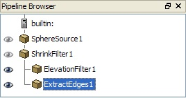
Figure 3. Branching Pipeline
Right-clicking a filter in the Pipeline Browser' displays a context menu from which you can do several things. For reader modules you can use this to load a new data file. All modules can be saved (the filter and the parameters you've set on it) as a Custom Filter (see the last section of this chapter), or delete it (if it is at the end of the visualization pipeline). For filter modules you can also use this menu to change the input to the filter, and thus rearrange the visualization pipeline.
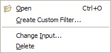
Figure 4. Context menu in Pipeline Browser
To rearrange the pipeline select Change Input from the context menu. That will bring up the Input Editor dialog box shown in Figure 5. The name of the dialog box reflect the filter that you are moving. The middle Select Source pane shows the pipeline as it stands currently and use this pane to select a filter to move the chosen filter on to. This pane only allows you to choose compatible filters. Ie, ones that produce data that can be ingested by the filter you are moving. It also does not allow you to create loops in the pipeline. Left-click to make your choice from the allowed set of filter and then the rightmost Pipeline Preview pane will show what the pipeline will look like once you commit your change. Click OK to do so or Cancel to abort the move.
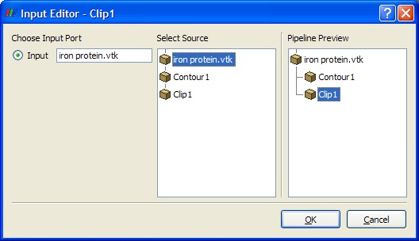
Figure 5. Input Editor dialog shown while moving an elevation filter to operate directly on a reader.
Some filters require more than one input. (See the discussion of merging pipelines below). For those the leftmost input port pane of the dialog produces shows more than one port. Use that together with the Select Source pane to specify each input in turn.
Conversely, some filters produce more than one output. Thus another was to make a branching pipeline is simply to open a reader for instance that produces multiple distinct data sets. An example of this is the SLAC reader that produces both a polygonal output and a structured data field output. Whenever you have a branching pipeline keep in mind that it is important to select the proper branch on which to extend the pipeline. For example, if you want to apply a filter like the Extract Subset filter, which operates only on structured data, while SLAC reader's polygonal output is the currently active filter, until you click on the readers structured data output and make that the currently active one.
Some filters that produce multiple data sets do so in a different way. Instead of producing several fundamentally distinct data sets, they produce a single composite data set which contains many sub data sets. See the Understanding Data chapter for an explanation of composite data sets. With composite data it is usually best to treat the entire group as one entity and you do not need to do anything in particular to do so. Sometimes though, you want to operate on a particular set of sub data sets. To do that apply the Extract Block filter. This filter allows you to pick the desired sub data set(s). Next apply the filter you are actually interested in to the extract filters output. An alternative is to hit 'B' to use '[[ParaView/Users Guide/Selection|Block Selection' in a 3D View and then use the Extract Selection filter.
Pipelines merge as well, whenever they contain filters that take in more than one input to produce their own output (or outputs). There are in fact two different varieties of merging filters. The Append Geometry and Group Data Sets filters are examples of the first kind. These filters take in any number of fundamentally similar data sets. Append for example takes in one or more polygonal datasets and combines them into a single large polygonal data set. Group takes in a set of any type of datasets and produces a single composite dataset. To use this type of merging filter, select more than one filter within the Pipeline browser by left clicking to select the first input and then shift-left clicking to select the rest. Now create the merging filter from the Filters menu as usual. The pipeline in this case will look like the one in the following figure.
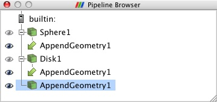
Figure 7. merging pipeline
Other filters take in more than one, fundamentally different data sets. An example is the Resample with Dataset filter which takes in one data set (the Input) that represents a field in space to sample values from and another data set (the Source) to use as a set of locations in space to sample the values at. Begin this type of merge by choosing either of the two inputs as the active filter and then creating the merging filter from the Filters menu. A modified version of the Change Input dialog shown in Figure 5 results (this one that lacks a Pipeline Preview pane). Click on either of the ports listed in the Available Inputs pane and specify and input for it from the Select Input pane. Then switch to the other input in the Available Inputs port and choose the other input on the Select Input pane. When you are satisfied with your choices click OK on the dialog and then Apply on the Pipeline Browser to create the merging filter.
Filter Categories
Available Filters
There are a great many filters available in ParaView (1) (and even more in VTK), and because ParaView has a modular architecture, it is routine for people to add additional ones (2). Some filters have obscure purposes and are rarely used, but others are more general purpose and used very frequently. These most common filters are found easily on the Common (View -> Toolbars) toolbar.
Figure 10. Common Filters Toolbar
These filters include:
Calculator - Evaluates a user-defined expression on a per-point or per-cell basis (3)
Contour - Extracts the points, curves, or surfaces where a scalar field is equal to a user-defined value. This surface is often also called an isosurface.
Clip - Intersects the geometry with a half space. The effect is to remove all the geometry on one side of a user-defined plane.
Slice - Intersects the geometry with a plane. The effect is similar to clipping except that all that remains is the geometry where the plane is located.
Threshold - Extracts cells that lie within a specified range of a scalar field.
Extract Subset - Extracts a subset of a grid by defining either a volume of interest or a sampling rate.
Glyph - Places a glyph, a simple shape, on each point in a mesh. The glyphs may be oriented by a vector and scaled by a vector or scalar.
Stream Tracer - Seeds a vector field with points and then traces those seed points through the (steady state) vector field.
Warp - Displaces each point in a mesh by a given vector field.
Group Datasets - Combines the output of several pipeline objects into a single multi block data set.
Group Extract Level - Extract one or more items from a multi block data set.
These eleven filters are a small sampling of what is available in ParaView.
In the Alphabetical submenu of the Filters menu you will find all of the filters that are useable in your copy of ParaView. Currently there are mote than one hundred of them, so to make them easier to find the Filters menu is organized into submenus. These submenus are organized as follows.
Recent - The filters you've used recently.
Common - The common filters. This is the same set of filters on the common filters toolbar.
Cosmology - This contains filters developed at LANL for cosmology research.
Data Analysis - The filters designed to retrieve quantitative values from the data. These filters compute data on the mesh, extract elements from the mesh, or plot data.
Statistics - This contains filters that provide descriptive statistics of data, primarily in tabular form.
Temporal - Filters that analyze or modify data that changes over time.
All filters can work on data that changes over time because they are re-executed at each time step. Filters in this category have the additional capability to inspect and make use of or even modify the temporal dimension.
Alphabetical - Many filters do not fit into the above categories so all filters can be found here.
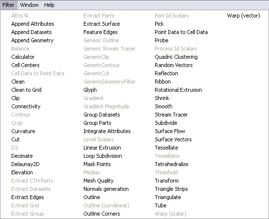
Figure 11. A portion of the Alphabetical submenu of the Filters menu.
Searching through these lists of filters, particularly the full alphabetical list, can be cumbersome. To speed up the selection of filters, you should use the quick launch dialog. Choose the first item from the filters menu, or alternatively press either CTRL and SPACE BAR (Windows or Linux) or ALT and SPACE BAR (on Macintosh) together to bring up the Quick Launch dialog. As you type in words or word fragments the dialog lists the filters whose names contain them. Use the up and down arrow key to select from among them and hit ENTER to create the filter.
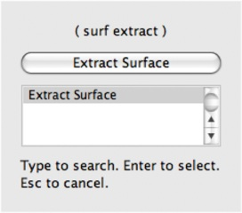
Figure 12. Quick Launch
Why can't I apply the filter I want?
Note that many of the filters in the menu will be grayed out and not selectable at any given time. That is because any given filter may only operate on particular types of data. For example the Extract Subset will only operate on structured data sets so it is only enabled when the module you are building on top of produces image data, rectilinear grid data, or structured grid data. Likewise the contour filter requires scalar data and can not operate directly on data sets that have only vectors. The input restrictions for all filters are listed in the Appendix and help menus.
When the filter you want is not available you should look for a similar filter which will accept your data or apply an intermediate filter which transforms your data into the required format. Since ParaView 3.10 you can also ask ParaView to try to do the conversion for you automatically by clicking "Auto convert Properties" in the application settings.
What does that filter do?
A description of what each filter does, what input data types it accepts and what output data types it produces can be found in the [ParaViewUsersGuide/List_of_filters|Appendix] and help menus. For a more complete understanding, remember that most ParaView filters are simply VTK algorithms, each of which is documented online in the VTK (http://www.vtk.org/doc/release/5.6/html/classes.html) and ParaView (http://www.paraview.org/ParaView3/Doc/Nightly/html/classes.html) Doxygen wiki pages.
When one is exploring a given data set, one does not want to have to hunt through the detailed descriptions of all of the filters in order to find the one filter that is needed at any given moment. It is useful then to be aware of the general high-level taxonomy of the different operations that the filters can be logically grouped into.
These are:
Attribute Manipulation : which manipulate the field aligned, point aligned and cell aligned data values and in general derive new aligned quantities.
Including Curvature, Elevation, Generate Ids, Generate Surface Normals, Gradient, Mesh Quality, Principal Component Analysis, and Random Vectors.
Geometric Manipulation : which essentially operate on or manipulate the shape of the data in a spatial context.
Including Reflect, Transform, and Warp
Topological operations : which manipulate the connected structure of the data set itself, usually creating or destroying cells, for instance to reduce the data sets memory size while leaving it in the same place in space.
Including Cell Centers, Clean, Decimate, Extract Surface, Quadric Clustering, Shrink, Smooth, and Tetrahedralize.
Sampling : which compute new data sets that represent some essential features from the data sets that they take as input.
Including Clip , Extract Subset, Extract Selection, Glyph, Streamline, Probe, Plot, Histogram, and Slice
Data Type Conversion : which covert between the various VTK data structures VTK Data Model and join or split entire data structures
Including Append DataSets,Append Geometry, Extract Blocks, Extract AMR Blocks, and Group DataSets
White Box Filters : which do arbitrary processing as specified at runtime by you the user
Including the Calculator and Python Programmable filters.
Best Practices
1.4.1 Avoiding Data Explosion
The pipeline model that ParaView presents is very convenient for exploratory visualization. The loose coupling between components provides a very flexible framework for building unique visualizations, and the pipeline structure allows you to tweak parameters quickly and easily.
The downside of this coupling is that it can have a larger memory footprint. Each stage of this pipeline maintains its own copy of the data. Whenever possible, ParaView performs shallow copies of the data so that different stages of the pipeline point to the same block of data in memory. However, any filter that creates new data or changes the values or topology of the data must allocate new memory for the result. If ParaView is filtering a very large mesh, inappropriate use of filters can quickly deplete all available memory. Therefore, when visualizing large data sets, it is important to understand the memory requirements of filters.
Please keep in mind that the following advice is intended only for when dealing with very large amounts of data and the remaining available memory is low. When you are not in danger of running out of memory, ignore all of the following advice.
When dealing with structured data, it is absolutely important to know what filters will change the data to unstructured. Unstructured data has a much higher memory footprint, per cell, than structured data because the topology must be explicitly written out. There are many filters in ParaView that will change the topology in some way, and these filters will write out the data as an unstructured grid, because that is the only data set that will handle any type of topology that is generated. The following list of filters will write out a new unstructured topology in its output that is roughly equivalent to the input. These filters should never be used with structured data and should be used with caution on unstructured data.
Append Datasets
Append Geometry
Clean
Clean to Grid
Connectivity
D3
Delaunay 2D/3D
Extract Edges
Linear Extrusion
Loop Subdivision
Reflect
Rotational Extrusion
Shrink
Smooth
Subdivide
Tessellate
Tetrahedralize
Triangle Strips
Triangulate
Technically, the Ribbon and Tube filters should fall into this list. However, as they only work on 1D cells in poly data, the input data is usually small and of little concern.
This similar set of filters also output unstructured grids, but they also tend to reduce some of this data. Be aware though that this data reduction is often smaller than the overhead of converting to unstructured data. Also note that the reduction is often not well balanced. It is possible (often likely) that a single process may not lose any cells. Thus, these filters should be used with caution on unstructured data and extreme caution on structured data.
Clip
Decimate
Extract Cells by Region
Extract Selection
Quadric Clustering
Threshold
Similar to the items in the preceding list, Extract Subset performs data reduction on a structured data set, but also outputs a structured data set. So the warning about creating new data still applies, but you do not have to worry about converting to an unstructured grid.
This next set of filters also outputs unstructured data, but it also performs a reduction on the dimension of the data (for example 3D to 2D), which results in a much smaller output. Thus, these filters are usually safe to use with unstructured data and require only mild caution with structured data.
Cell Centers
Contour
Extract CTH Fragments
Extract CTH Parts
Extract Surface
Feature Edges
Mask Points
Outline (curvilinear)
Slice
Stream Tracer
These filters do not change the connectivity of the data at all. Instead, they only add field arrays to the data. All the existing data is shallow copied. These filters are usually safe to use on all data.
Block Scalars
Calculator
Cell Data to Point Data
Curvature
Elevation
Generate Surface Normals
Gradient
Level Scalars
Median
Mesh Quality
Octree Depth Limit
Octree Depth Scalars
Point Data to Cell Data
Process Id Scalars
Random Vectors
Resample with dataset
Surface Flow
Surface Vectors
Texture Map to...
Transform
Warp (scalar)
Warp (vector)
This final set of filters are those that either add no data to the output (all data of consequence is shallow copied) or the data they add is generally independent of the size of the input. These are almost always safe to add under any circumstances (although they may take a lot of time).
Annotate Time
Append Attributes
Extract Block
Extract Datasets
Extract Level
Glyph
Group Datasets
Histogram
Integrate Variables
Normal Glyphs
Outline
Outline Corners
Plot Global Variables Over Time
Plot Over Line
Plot Selection Over Time
Probe Location
Temporal Shift Scale
Temporal Snap-to-Time-Steps
Temporal Statistics
There are a few special case filters that do not fit well into any of the previous classes. Some of the filters, currently Temporal Interpolator and Particle Tracer, perform calculations based on how data changes over time. Thus, these filters may need to load data for two or more instances of time, which can double or more the amount of data needed in memory. The Temporal Cache filter will also hold data for multiple instances of time. Also keep in mind that some of the temporal filters such as the temporal statistics and the filters that plot over time may need to iteratively load all data from disk. Thus, it may take an impractically long amount of time even if does not require any extra memory.
The Programmable Filter is also a special case that is impossible to classify. Since this filter does whatever it is programmed to do, it can fall into any one of these categories.
1.4.2 Culling Data
When dealing with large data, it is clearly best to cull out data whenever possible, and the earlier the better. Most large data starts as 3D geometry and the desired geometry is often a surface. As surfaces usually have a much smaller memory footprint than the volumes that they are derived from, it is best to convert to a surface soon. Once you do that, you can apply other filters in relative safety.
A very common visualization operation is to extract isosurfaces from a volume using the contour filter. The Contour filter usually outputs geometry much smaller than its input. Thus, the Contour filter should be applied early if it is to be used at all. Be careful when setting up the parameters to the Contour filter because it still is possible for it to generate a lot of data. This obviously can happen if you specify many isosurface values. High frequencies such as noise around an isosurface value can also cause a large, irregular surface to form.
Another way to peer inside of a volume is to perform a Slice on it. The Slice filter will intersect a volume with a plane and allow you to see the data in the volume where the plane intersects. If you know the relative location of an interesting feature in your large data set, slicing is a good way to view it.
If you have little a-priori knowledge of your data and would like to explore the data without paying the memory and processing time for the full data set, you can use the Extract Subset filter to subsample the data. The subsampled data can be dramatically smaller than the original data and should still be well load balanced. Of course, be aware that you may miss small features if the subsampling steps over them and that once you find a feature you should go back and visualize it with the full data set.
There are also several features that can pull out a subset of a volume: Clip, Threshold, Extract Selection, and Extract Subset can all extract cells based on some criterion. Be aware, however, that the extracted cells are almost never well balanced; expect some processes to have no cells removed. Also, all of these filters with the exception of Extract Subset will convert structured data types to unstructured grids. Therefore, they should not be used unless the extracted cells are of at least an order of magnitude less than the source data.
When possible, replace the use of a filter that extracts 3D data with one that will extract 2D surfaces. For example, if you are interested in a plane through the data, use the Slice filter rather than the Clip filter. If you are interested in knowing the location of a region of cells containing a particular range of values, consider using the Contour filter to generate surfaces at the ends of the range rather than extract all of the cells with the Threshold filter. Be aware that substituting filters can have an effect on downstream filters. For example, running the Histogram filter after Threshold will have an entirely different effect then running it after the roughly equivalent Contour filter.
Custom Filters aka Macro Filters
Macros (aka Custom Filters)
It often happens that once you figure out how to do some specific data processing task, you want to repeat it often. You may for example want to reuse particular filters with specific settings (for example complicated calculator or programmable filter expressions) or even entire pipeline sections consisting on new data sets without having to manually enter the parameters each time.
You can do this via the clever use of state files or more conveniently python scripts and python macros 1 . Saving, editing and reusing state files gives you the ability to recreate entire ParaView sessions. This does not give you fine enough control for small, repeatedly reused tasks. Python Tracing does give you fine grained control, but this assumes that your have python enabled in your copy of ParaView (which is usually but not always the case) and that you remember to turn on Trace recording before you did whatever it was that you want to play back. Both techniques largely require that you think like a programmer when you initially create and setup the scripts. Another alternative is to use ParaView's Custom Filters which let you create reusable meta-filters strictly within the GUI.
A Custom Filter is a black box filter that encapsulates one or more filters in a sub-pipeline and exposes only those parameters from that sub-pipeline that the Custom Filter creator chose to make available. For example, if you capture a ten element pipeline in your Custom Filter where each filter happened to have eight parameters, you could choose to expose anywhere from zero to eighty parameters in your Custom Filter's Properties tab.
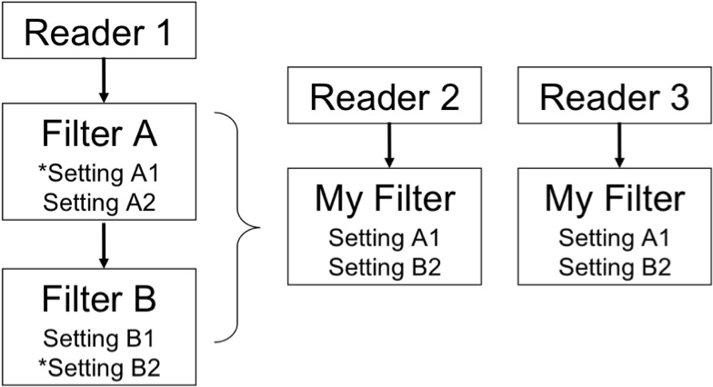
Figure 13: Custom Filter concept
Once you have set up some pipeline that performs the data processing that you want to reuse, the process of creating a Custom Filter consists of three steps. First select one or more filters from the Pipeline Browser using the mouse. Next from the Tools menu select Create Custom Filter. From that dialog choose the filter in your chosen sub-pipeline who's input is representative of where you want data to enter into your Custom Filter. This is usually the topmost filter. If you are creating a multi-input filter, click the + button to add additional inputs and configure them in the same way. Clicking Next brings you to a similar dialog in which you choose the outputs of your Custom Filter. Click Next again to get to the last dialog. On this one you specify which parameters of the internal filters that you want to expose to the eventual user of the custom filter. You can optionally give each parameter a descriptive label here as well. The three dialogs are shown below.
|
Step 1: configure one or more inputs to your new filter.
|
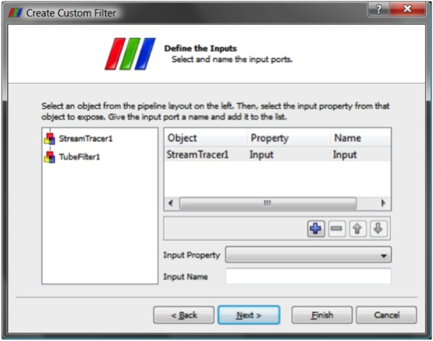
|
|
Step 2: configure one or more outputs of your new filter.
|
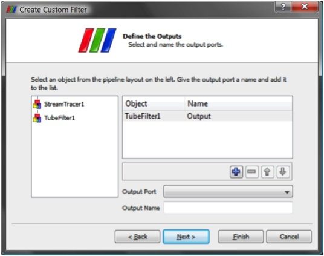
|
|
Step 3: identify and name the controls you want to expose of your new filter.
|
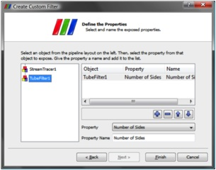
|
Figure 9: Creating a Custom Filter
Once you create a Custom Filter it is added to the Alphabetical sub menu of the Filters menu. It is automatically saved in ParaView's settings, so the next time you start ParaView on the same machine you can use it just like any of the other filters that came with your copy of ParaView. Custom Filters are treated no differently than other filters in ParaView and are saveable and restorable in state files and python scripts. If you find that you no longer need some Custom Filter and want to get rid of it, use the Manage Custom Filters dialog box under the Tools menu to remove it.
If on the other hand you find that a Custom Filter is very useful, you may instead want to give it to a colleague. On that same dialog are controls for exporting and importing Custom Filters. When you save a Custom Filter you are prompted for a location and filename to save the filter in. The file format is a simple XML text file that you can simply email or otherwise deliver.